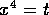

Some of the properties of objects newly created by mkobj() are derived from lisp variables that define the ``tensor environment'' of the system, namely coords!*, which contains the coordinate names; and defindextype!*, which contains the definitions of index-types and the runs of indices (i.e. the integer range over which an index of a given type can vary). The length of the coords!* list is the dimension of the space time; the default value is '(t r th ph). The coords!* variable is set with the function coords() and the defindextype!* variable is set with the function defindextype().
The coords() function takes the list of coordinates as its first argument, and an optional second argument is used to determine the starting value for the tensor index-run, the default is 0. The default ranges of indices are shown in table 2.1. The coords() function also creates a coordinate-vector whose default name is the value of mkcoords.
For example, to change from the default spherical coordinates to those appropriate to the Robertson-Walker metric:
#: coords '(t om th ph); (t om th ph)(Observe that as a function with one argument, the enclosing parenthesis are not required, but are required in the example below, where coords() has two arguments). If the user prefers to regard , then the following would be used:
#: coords ('(om th ph t), 1);
(t om th ph)
and the tensor index range will be 1--4.
coords() prints the new coordinate list, or the current list if
no argument is given. The old coordinates are saved in
oldcoords!*. The old coordinates can be reset with the command
#: lisp coords oldcoords!*; (t r th ph)